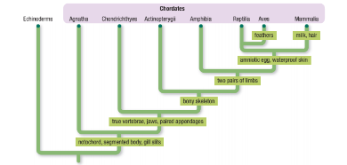

The Animals
What are animals?
- Animals are the most complex of all organisms.
- They are multicellular eukaryotes.
- Unlike plants and fungi, most animals are motile (they can move around).
- They have the amazing sensory ability and are capable of very complex behaviors.
- You are a member of this Kingdom.
Why animals are important?
- The more we learn about the biology of animals, the more we learn about ourselves.
- As we improve our understanding of animal biology, we also improve our understanding of the origin and cause of human diseases and how best to keep our bodies and minds healthy.
3.png)
- We also depend on many other animal species for our own survival.
- We use many species of wild and domesticated animals as sources of food and other products.
- We depend on animals to pollinate important food crops, and we count on animals to play their important roles in maintaining the health of natural ecosystems.
- Humans also have a special affinity for their pets.
- Throughout history and across cultures, animals have been revered as symbols of power, beauty, freedom, and even peace.
- This admiration is shown in our deep concern for, and great efforts to protect, many endangered animal species, including giant pandas, elephants, rhinoceroses, polar bears, and Canada’s peregrine falcons.
1%20(1).png)
Animal Classification Phylogeny
- The common ancestor of all animals was likely a colonial, flagellated protist that lived at least 700 million years ago.
- Biologists have hypothesized that a spherical arrangement of cells in a colony might have become indented, forming a hollow cavity that helped the organism capture and digest food.
1.png)
A key early innovation among animals was the development of nerves—specialized cells used to coordinate movements and sense changes in the environment.
1.png)
Animals in the Porifera phylum, such as modern sponges, are the only ones that do not have this key animal feature.
Another major division among animal phyla is between those with radial symmetry and those with bilateral symmetry.
1.png)
1.png)
Select each tab to learn more.
is the symmetry around a central axis.
is the symmetry around a midline.
The bodies of animals with radial symmetry are regularly arranged around a central axis, like the spokes of a wheel.
|
Example: Jellyfish
The bodies of animals with bilateral symmetry have left and right sides that are mirror images of each other. |
|
Example: humans
As you can see,, bilaterally symmetrical animals also have different dorsal (upper) and ventral (lower) surfaces as well as an anterior (front) and posterior (back) end. |
1.png)
1.png)
Bilaterally symmetrical animals are further divided into two major branches.
The protostomes and deuterostomes are distinguished by different patterns of embryonic development.
1.png)
Select each item to learn more.
Protostome
an animal with bilateral
symmetry; during embryonic development, the mouth forms before the anus.
.png)
Deuterostome
an animal with bilateral
symmetry; during embryonic development, the anus forms before the mouth.
.png)
|
Bilaterally symmetrical animals also have different dorsal (upper) and ventral (lower) surfaces as well as an anterior (front) and posterior (back) end.
|
.png)
|
The Chordata are almost entirely vertebrates—animals with a dorsal backbone or notochord, including fish, amphibians, reptiles, birds, and mammals.
All other animals are referred to as invertebrates. |
.png)
Phylogenetic Tree of Kingdom Animalia
.png)
.png)
|
This phylogenetic tree of the Animal Kingdom is based on recent evidence from genetics and molecular biology. The tree shows 10 of the 17 animal phyla. |
Characteristics of Animals
- All animals are multicellular heterotrophs that use oxygen for aerobic respiration.
- Their cell membranes are in direct contact with each other.
- Unlike plants and fungi, animal cells do not have cell walls.
.png)
Cell Specialization and Germ Layers
Most animals have one of two types of coelom.
.png)
Important terminologies:
Select each tab to learn more.
is one of three layers that form during early embryonic development in most animals.
is a body cavity present in some animals; contains the animal’s internal
The Three (3) Germ Layers
-
the ectoderm (ecto meaning “outer” and derm meaning “layer”)
-
the endoderm (endo meaning “inner”)
-
and the mesoderm (meso meaning “middle”)
Select each item to learn more.
Cell Specialization and Germ Layers (The Ectoderm)
The ectoderm gives rise to the skin and nervous system.
In some complex animals, ectoderm cells produce shells, scales, feathers, hair, and nails.
.png)
.png)
Cell Specialization and Germ Layers (The Endoderm)
The endoderm forms the inner lining of the gut and, in some organisms, the respiratory system.
.png)
Cell Specialization and Germ Layers (The Mesoderm)
The mesoderm gives rise to the circulatory, reproductive, excretory, and muscular systems.
.png)
The Simplest Invertebrates
-
The phyla Porifera and Cnidaria include the simplest invertebrate animals.
-
The Porifera includes about 8000 species of sponges.
.png)
.png)
|
Sponges have a simple body plan with flagellated cells, called choanocytes, lining a central cavity. The flagella create a continuous current of water that passes through pores in the body wall and exits through large openings at the top of the sponge. |
.png)
|
Food particles entering with water are captured by the choanocytes.
Most sponges are hermaphrodites that release sperm into the surrounding water. Their eggs remain within their bodies and are fertilized by other sperm that are drawn in with water. |
.png)
|
Most sponges are marine, but there are more than 100 freshwater species, including some that are common in Ontario. |
.png)
|
The Cnidaria include close to 9000 species of hydras, anemones, jellyfish, and coral animals. |
.png)
|
Coral animals are cnidarians that produce external skeletons made of calcium carbonate. A local species of cnidarian is the freshwater jellyfish Craspedacusta sowerbyi. |
The Protostome Invertebrates
The Six Major Phyla of Protostome Animals
- Arthropoda (arthropods)
- Nematoda (roundworms)
- Annelida (segmented worms)
- Rotifera (rotifers)
- Mollusca (mollusks)
- Platyhelminthes (flatworms)
Select each item to learn more.
Arthropoda (arthropods)
-
They have segmented bodies with jointed appendages.
-
They have complex sensory systems including antennae.
-
Their hard outer skeletons contain chitin.
-
Insects are the only invertebrates capable of flight.
(and some other characteristics)
.png)
examples,
Insects, spiders, mites, ticks, millipedes, centipedes, scorpions, Daphnia, crabs, lobsters, shrimps, barnacles
Nematoda (roundworms)
They have unsegmented cylindrical bodies with complete
digestive tracts.
• Many are important parasites of other animals.
• Some females can produce more than 100,000 eggs each day.
• They live in very large numbers in the soil and aquatic sediments.
• They range in size from 2 mm to 2 m in length.
• About 20 000 species have been described (2 classes).
.png)
examples
Pinworms, Dog heartworms
Annelida(segmented worms)
Their bodies and most of their internal organs are segmented.
• They have complete digestive systems.
• Gas is exchanged through the skin, gills, or other specialized
body parts.
• Most have bristles on their outer surface to help with movement.
• Many are marine.
• They range in size from 0.5 mm to 3 m in length.
• About 14,000 species have been described (7 classes).
examples
Earthworms, Feather-duster worms

Mollusca (mollusks)
They have three main unsegmented body parts: a foot, a visceral
mass, and a mantle that secretes a shell.
• Almost all have specialized file-like radula used for scraping and boring.
• In some species the shell is reduced or absent.
• They have complete digestive systems, circulatory systems, and gills.
examples snails, clams, octopuses, squid
.

Rotifera (rotifers)
They are small aquatic animals (less than 2 mm long).
• They use cilia to direct food into their mouths.
• Most live in freshwater.
• They have no respiratory or circulatory system.
• They are very important consumers in many aquatic food webs.
• About 1800 species have been described (3 classes).
examples,
rotifers

Body Plans and Life Cycles
The body plans and life cycles of protostomes are extraordinarily diverse.
Their success is due in large part to an efficient body plan that includes nervous, digestive, respiratory, excretory systems, and reproductive systems; advanced sensory structures; and the ability to fly.
.png)
| Other characteristic body features of protostomes include the powerful claws of crabs and lobsters, the tentacles of octopuses and squid, the ornate shells of snails and clams, and the large, colorful wings of butterflies. |

Select each item to learn more.
Human–Protostome Interactions
The protostomes include many species that are of great consequence to humans and interact with us in direct ways. They affect our food supply, our health, and our economy.

Competitors
Insects are some of the best-known competitors.

-
Virtually every food crop has a number of important insect pests.
For example, important pests of Ontario corn crops include at least 13 different species of insect and one species of slug (Phylum Mollusca)
Pathogens and Vectors
Humans suffer from many parasitic diseases. Some are caused by protists, but others are caused by animals, particularly species of nematodes, tapeworms, and flukes. Various nematode parasites are capable of infecting many body tissues.

Food and Economic Benefits
We eat many of these animals, including mollusks such as clams and scallops, crustaceans such as shrimp and lobsters, and the honey produced by bees. We use oysters for food and as a source of pearls.
The Deuterostomes
The deuterostomes are a much less diverse but much more familiar collection of animals.
This branch of the animal phylogenetic tree includes two main groups: the echinoderms (starfish, sea urchins, sea cucumbers, and their closest relatives) and the chordates (vertebrates and their closest relatives).
The Echinoderms
The 6500 species of echinoderms are the only invertebrates that exhibit the same pattern of early embryonic development as the vertebrates.
The immature stages of echinoderms are free swimming and bilaterally symmetrical. As they grow, they develop a radially symmetrical pattern around five or more arms.
The Chordates
The chordates include fish, amphibians, mammals, reptiles, and birds. Although
the birds are discussed here as a separate class, they are now considered a recently evolved group of reptiles.
The chordates include the most complex living organisms. They are thought to have evolved from bilaterally symmetrical ancestors with segmented bodies.
.png)
The Phylogenetic Tree for the Deuterostomes
The phylogenetic tree indicates major features that arose in the evolutionary history of the chordates. The birds are shown as a distinct group, although they are now considered to belong to the reptile clade.

Seven Classes of Vertebrates
|